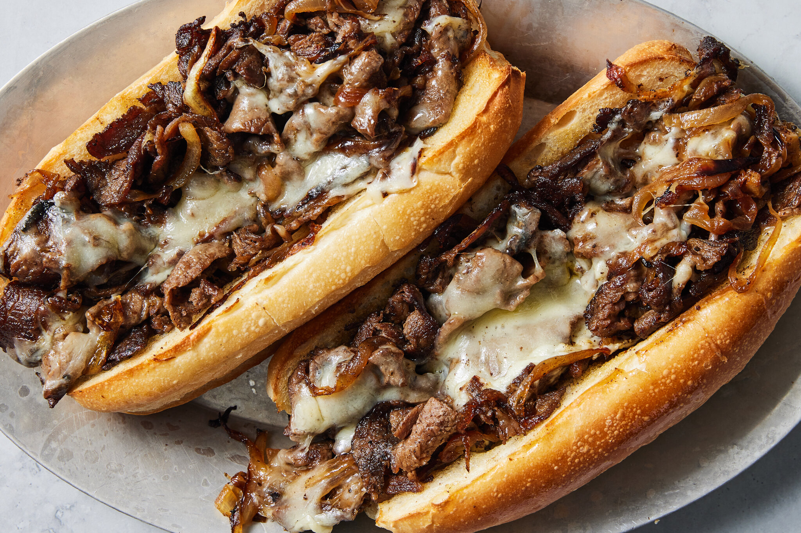

Philly Cheesesteak

Description
It’s hard to imagine that anything could be divisive about a sandwich of sautéed beef, crisp-edged onions and oozy cheese, but the Philly cheesesteak’s origin and ingredients are hotly contested in the city of brotherly love. Variations abound, but the standard is made with thinly sliced rib-eye (although you can also find it made with more affordable brisket). In this recipe, either cut of beef can be used, and using presliced meat, commonly found in the freezer section at Asian markets, is a smart short-cut. The tender meat is topped with sweet, nearly caramelized onions and a blanket of sharp Provolone, or Cheez Whiz, the bright yellow cheese sauce, spooned over the top.
Ingredients
- 2 pounds frozen, pre-sliced rib-eye or brisket, or fresh, very thinly sliced (see Tip 1)
- 3 tablespoons neutral oil, such as vegetable, plus more as needed
- 2 medium yellow onions, thinly sliced
- Kosher salt (such as Diamond Crystal)
- Black pepper
- 12 slices Provolone or 1 cup Cheez Whiz (see Tip 2)
- 4 (8-inch) hoagies
Steps
- Heat the oven to 350 degrees. Remove steak from the freezer. Heat a large skillet over medium heat, then add the oil and onions. Sprinkle with a pinch of salt and cook the onions, stirring every few minutes, until they begin to soften, brown, and have slightly crispy ends, about 15 minutes. Transfer to a bowl.
- Pull the meat slices apart (they will still be slightly frozen; see Tip 1) and add them to the pan over medium-high. As the meat cooks, use a spatula to continue separating the slices so they cook evenly. When the meat is mostly cooked but still a little pink, about 4 minutes, season with salt and pepper, and cook until no longer pink and the edges are browned, about 4 minutes more.
- Meanwhile, slice the hoagies in half lengthwise, only about ¾ of the way through. Arrange them cut-side down on an oven rack and toast until lightly browned, about 5 minutes.
- Once the meat is fully cooked, adjust the heat to medium-low and add the onions back to the pan, stirring until combined. Divide the filling into four piles, and top each with 3 slices of Provolone (if using Cheez Whiz, see Tip 2). Cook until the cheese melts, 3 to 4 minutes. While the cheese melts, remove the hoagies from the oven. Use a spatula or pastry scraper to transfer the meat onto the hoagies. Slice in half and eat immediately.